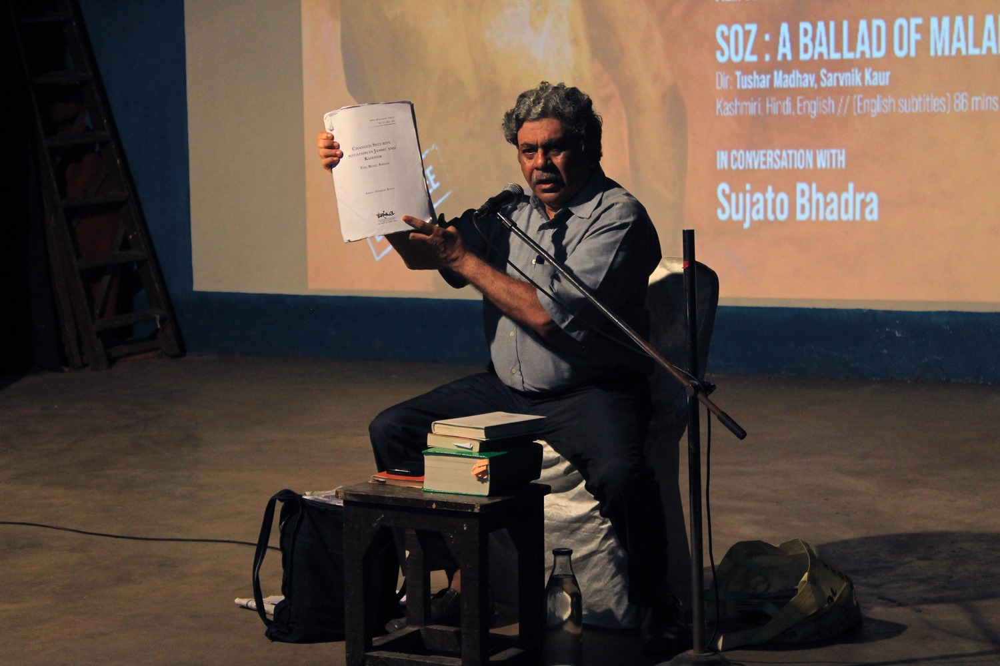

Kashmir Now: Monthly Film Screening and Conversation
Glimpses from the 'Kashmir Now' monthly film screening and conversations programme, held on 8th September, where we all gathered to go over the present situation that Kashmiris have been thrown into, post the abrogation of article 370/35A and the imposed partition/downgrading of the special state status of J&K. Human rights activist Sujato Bhadra spoke at length in great details about the 70+ years' deception and coercion policy adopted by the post colonial govt of India vis-a-vis Kashmir, and how constitutional promises have been systematically demolished. The documentary film, "Soz: A Ballad of Maladies" directed by Tushar Madhav and Sarvnik Kaur was screened to a full house. The film depicts the history, politics and social life of the valley and its people uniquely, all the while walking us through a journey of Kashmiri music and the arts, its languages of spirituality, syncretism and resistance to oppression.
Photograhy: Suman Kayan, Sajid Jangi